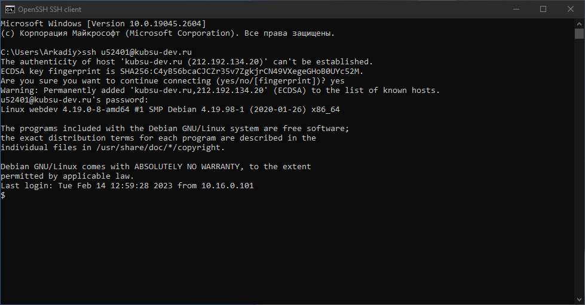
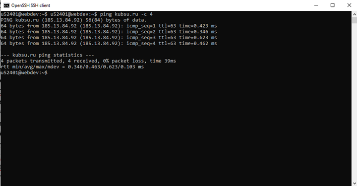
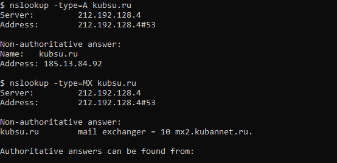
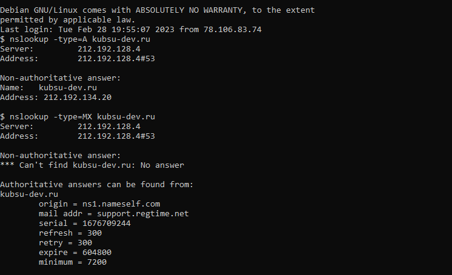
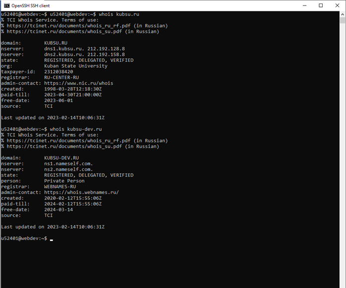
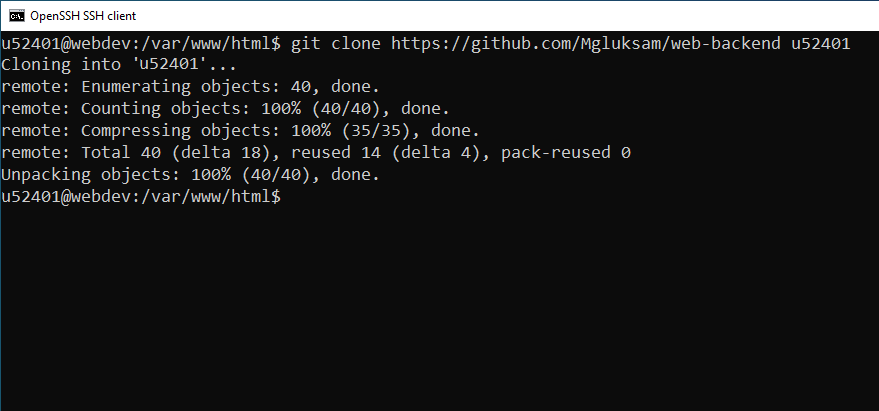
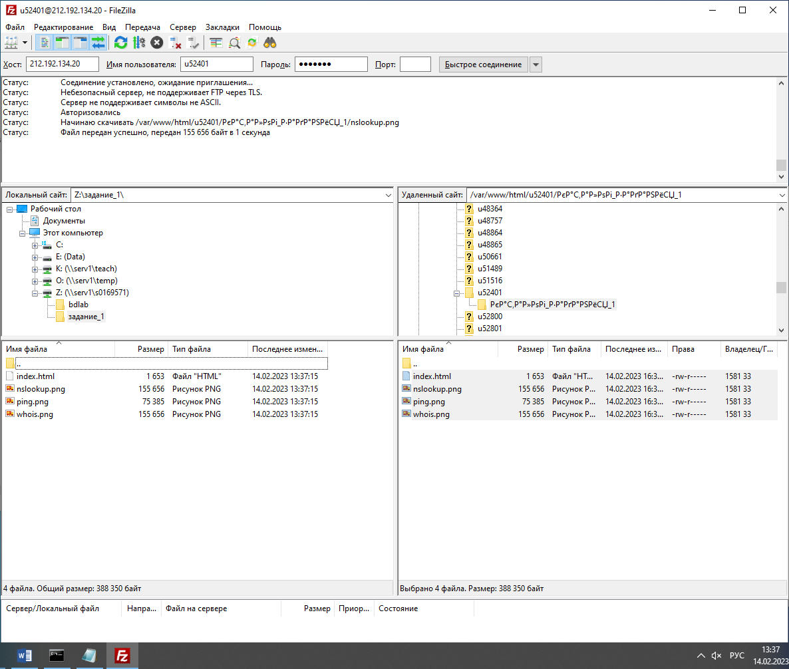

Выполняем вход на учебный сервер с помощью командной строки командой ssh

Выполняем команду ping с учебного сервера, чтобы узнать ip-адрес домена kubsu.ru ping kubsu.ru

Выполняем команду nslookup для домена kubsu.ru с параметрами -A для определения ip-адреса домена и -MX для определения ip-адреса почтового шлюза

Выполняем команду nslookup для домена kubsu-dev.ru с параметрами -A для определения ip-адреса домена и -MX для определения ip-адреса почтового шлюза

Выполняем команду whois для домена kubsu.ru и kubsu-dev.ru для получения регистрационных данных

Клонируем репозиторий с помощью команды git clone

С FileZilla соединяемся с сервером по протоколу FTP и копируем файлы из директории /var/www/html/u52401 на локальный компьютер